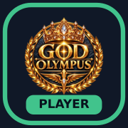

OLYMPUS · Игрок
Добавьте этот кабинет на экран iPhone:
- Откройте эту страницу в Safari.
- Нажмите «Поделиться» → «На экран Домой».
- Проверьте значок в окне добавления и нажмите «Добавить».
В окне добавления должна быть эмблема, как выше. Если там серая буква O, сделайте скриншот этого окна — он поможет найти причину.
Открыть кабинетДобавляйте ярлык до перехода в кабинет. Если старый ярлык серый, замените его после проверки нового. Данные альянса сохранятся.